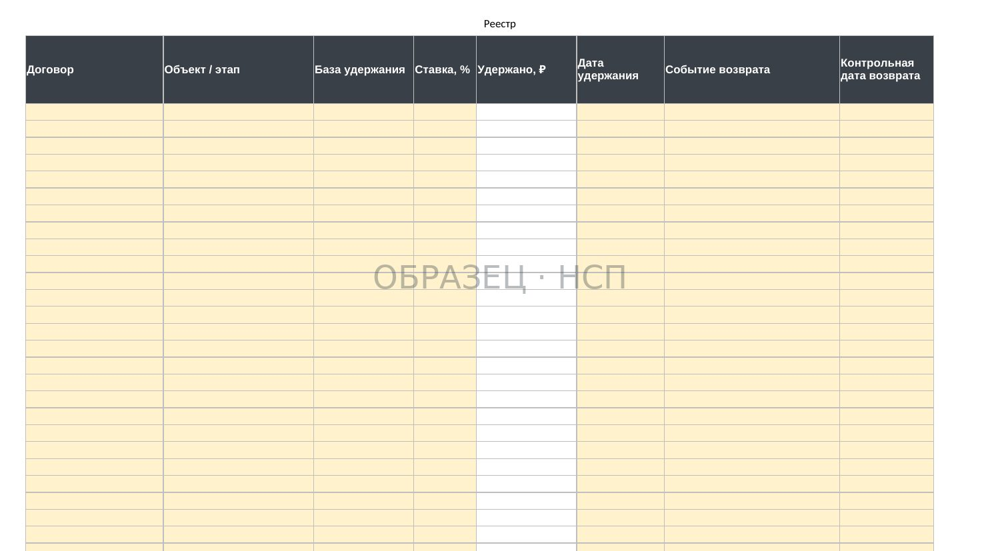
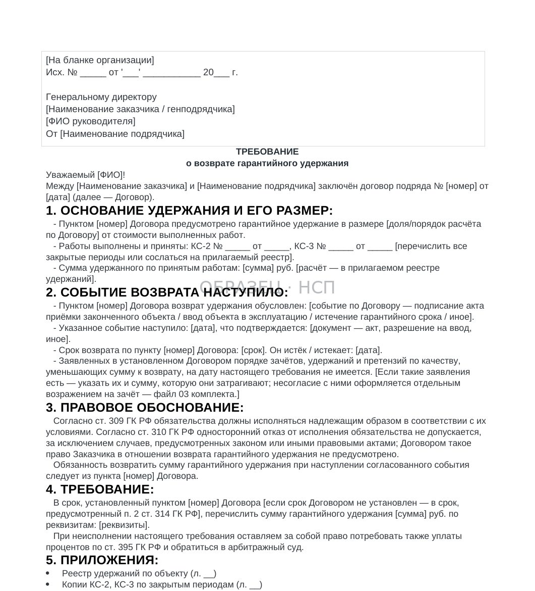
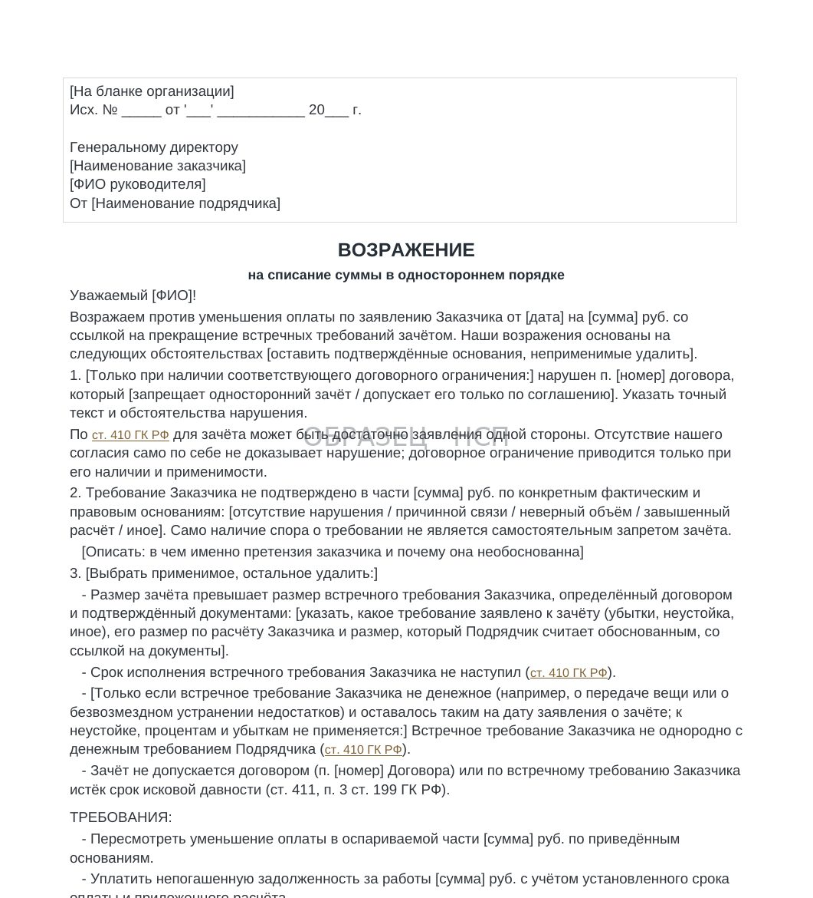
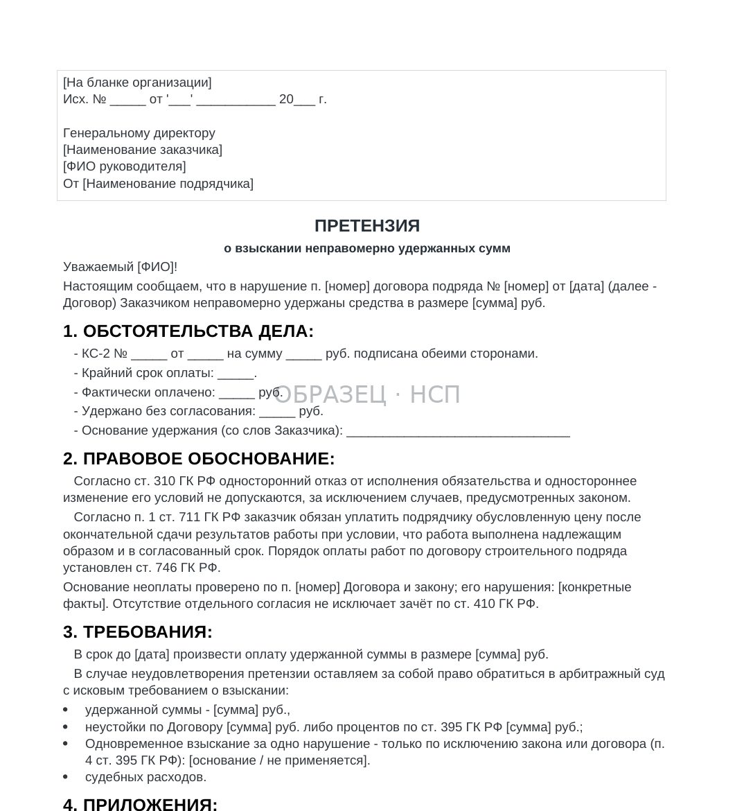

УДЕРЖАНИЕ / ПОРЯДОК ДЕЙСТВИЙ
Возврат гарантийного удержания: как подтвердить срок, рассчитать сумму и направить требование
Обновлено 10 ноября 2026
Порядок действий подрядчика, если гарантийное удержание не возвращено: проверка договора, расчёт задолженности, возражения на зачёт и подготовка претензии.
Подрядчик завершил работы, передал исполнительную документацию и оформил акты приёмки. При расчётах заказчик удерживал предусмотренный договором процент от стоимости работ. Позднее наступило событие, с которым стороны связали возврат этой суммы, однако оплата не поступила.
Перед направлением требования необходимо установить, какая сумма действительно подлежит возврату, наступил ли срок её оплаты и имеются ли у заказчика документально подтверждённые основания для уменьшения платежа.
Задержка может быть связана как с обычным неисполнением денежного обязательства, так и с разногласиями по гарантийным недостаткам, штрафам, зачёту встречных требований или толкованию договорного условия. Для каждой ситуации требуется свой набор документов.
1. Определите правовую природу удержания
Гарантийное удержание — предусмотренный договором механизм, при котором часть стоимости выполненных работ выплачивается подрядчику позднее, после наступления согласованного события либо выполнения определённых условий.
В договоре могут использоваться разные названия: «гарантийное удержание», «гарантийный резерв», «обеспечительная сумма» или «отложенная часть оплаты». Юридическое значение имеет содержание условия, а не только его название.
Удержание следует отличать от других механизмов расчётов:
Гарантийное удержание. Часть цены принятых работ, порядок и момент выплаты которой определяются договором.
Штраф или неустойка. Денежная ответственность за конкретное нарушение обязательства, предусмотренная законом или договором.
Зачёт. Прекращение встречных однородных требований полностью или частично при соблюдении применимых условий.
Определение сальдо взаимных предоставлений. Расчёт итогового обязательства сторон с учётом содержания договора и характера взаимосвязанных требований. Его не всегда можно оценивать по тем же правилам, что односторонний зачёт по статье 410 ГК РФ.
Если заказчик одновременно ссылается на удержание, начисленную неустойку и зачёт, необходимо разделить основания каждого уменьшения платежа. Одно письмо заказчика может содержать несколько разных по правовой природе требований.
2. Проверьте событие, от которого зависит возврат
Сначала необходимо открыть пункт договора о гарантийном удержании и определить два обстоятельства: событие, после которого возникает обязанность возврата, и срок перечисления денежных средств после этого события.
На практике встречаются разные варианты.
Подписание итогового акта по договору. Нужно определить, какой именно документ стороны признали итоговым и подписан ли он надлежащими лицами.
Истечение гарантийного срока на работы подрядчика. Следует проверить дату начала гарантийного периода, его продолжительность, условия продления и фактическую дату окончания.
Устранение выявленных недостатков. Необходимо выяснить, какие недостатки были предъявлены, относятся ли они к работам подрядчика и какие документы подтверждают их устранение.
Ввод объекта в эксплуатацию. Это событие может зависеть от действий заказчика и других участников строительства. Следует проверить применимость такого условия, доказательства наступления события и возможные риски его неопределённости.
Получение заказчиком оплаты от третьего лица. Необходимо исследовать договорное условие отдельно: сам факт отсутствия поступления средств заказчику не всегда означает отсутствие у него денежного обязательства перед подрядчиком.
Если момент возврата не удаётся определить однозначно, не следует произвольно подставлять дату. Сначала требуется оценить договор, фактическое исполнение и применимые положения о сроках исполнения обязательств.
Подробнее об этом — в статье «Срок гарантийного удержания: от какого события считается».
3. Рассчитайте сумму, которую можно требовать
Для расчёта необходимо восстановить историю начисления и возврата гарантийного удержания по договору.
Удобно составить реестр с отдельной строкой по каждому акту или расчётному периоду. В него включаются:
- Номер и дата документа, которым подтверждена стоимость работ.
- Стоимость принятого объёма и согласованный процент удержания.
- Фактически удержанная сумма.
- Дата и сумма уже произведённого возврата.
- Документально подтверждённые корректировки, если они действительно допустимы по договору.
- Сумма остатка, срок возврата и текущий статус требования.
Пример. По трём актам удержаны 150 000 ₽, 220 000 ₽ и 130 000 ₽. Совокупное удержание составляет 500 000 ₽. Если заказчик ранее перечислил 120 000 ₽, а другие изменения не подтверждены, предварительный остаток составляет 380 000 ₽.
Это пример расчёта, а не готовая сумма требования. В реальном договоре необходимо дополнительно проверить условия применения процента удержания, частичные возвраты, корректировки актов и возможные встречные требования.
Стоимость работ, отражённая в КС-2, и сумма фактического платежа — разные показатели. Гарантийное удержание не следует автоматически отражать как уменьшение стоимости уже выполненных работ.

Порядок сверки расчётных документов описан в статье «Гарантийное удержание в КС-2 и КС-3».
4. Соберите доказательства наступления срока возврата
Одного реестра удержаний недостаточно: необходимо подтвердить обстоятельства, с которыми договор связывает обязанность заказчика перечислить деньги.
Базовый комплект доказательств обычно включает договор и действующие дополнительные соглашения, документы о сдаче и приёмке работ, КС-2 и КС-3 при их использовании, банковские выписки и платёжные документы, а также расчёт удержанной суммы.
К ним добавляются документы по конкретному событию возврата:
При окончании гарантийного периода — подтверждения даты его начала и продолжительности, а также сведения о предъявленных в этот период требованиях.
При устранении недостатков — акты осмотра, перечни замечаний, переписка, сообщения о готовности к повторному освидетельствованию и документы о фактическом устранении.
При завершении этапа или объекта — соответствующие акты, сведения о вводе объекта в эксплуатацию и другие предусмотренные договором подтверждения.
Документы должны позволять определить не только наличие удержания, но и момент, с которого сумма подлежала перечислению.
Если доказательства находятся у заказчика, целесообразно письменно запросить конкретные документы или сведения и сохранить подтверждение направления запроса.
5. Направьте письменное требование о возврате
Когда сумма определена и срок возврата наступил, подрядчик может направить заказчику письменное требование об оплате.
Предварительное нейтральное напоминание допустимо, если стороны обычно урегулируют расчёты в рабочем порядке. Однако это необязательный самостоятельный этап: при наступившем сроке нет необходимости откладывать формальное требование ради дополнительной переписки.
В требовании следует указать:
- Реквизиты сторон, договора и условия о гарантийном удержании.
- Порядок определения удержанной суммы с приложением расчёта.
- Событие возврата и доказательства его наступления.
- Дату, с которой заказчик должен был перечислить деньги.
- Сумму непогашенного обязательства и банковские реквизиты.
- Предлагаемый срок исполнения, если он требуется по обстоятельствам дела, и перечень приложений.
Способ направления выбирается с учётом договора и правил о юридически значимых сообщениях. Важно сохранить доказательства не только отправки, но и содержания переданных документов.
Не следует включать в требование неподтверждённые суммы штрафов, убытков или процентов. Их правовые основания и расчёты нужно проверять отдельно.

6. Если заказчик заявляет штраф или неустойку
В ответ на требование заказчик может направить расчёт неустойки и предложить уменьшить на её сумму возвращаемое удержание.
Подрядчику следует проверить наличие нарушения, основание ответственности и правильность расчёта.
Для просрочки выполнения работ важно установить согласованные сроки, фактическую дату исполнения, наличие дополнительных соглашений, приостановлений и обстоятельств, зависящих от заказчика.
Статья 330 ГК РФ определяет неустойку как предусмотренную законом или договором денежную сумму за нарушение обязательства. При этом кредитор не вправе требовать неустойку, если должник не несёт ответственности за соответствующее нарушение.
В частности, могут иметь значение несвоевременная передача фронта работ, отсутствие согласованной документации, задержка предоставления исходных данных или иные препятствия. Однако ссылки на эти обстоятельства необходимо подтверждать договором, уведомлениями, журналами и перепиской.
Отдельно проверяются ставка, период начисления, база расчёта, договорные ограничения и отсутствие повторного начисления по одному и тому же основанию.
Статья 333 ГК РФ допускает снижение явно несоразмерной неустойки. Для обязательств, нарушенных лицом, осуществляющим предпринимательскую деятельность, уменьшение судом требует соответствующего заявления и соблюдения предусмотренных законом условий. Самостоятельное уменьшение подрядчиком выставленного штрафа со ссылкой на статью 333 не означает, что размер обязательства юридически изменён.
Если заказчик предъявил расчёт без надлежащего подтверждения, следует направить мотивированный письменный ответ с конкретными возражениями.
7. Если заказчик сообщает о зачёте
Одностороннее уведомление о зачёте необходимо проверить отдельно от требования о возврате удержания.
По общему правилу статьи 410 ГК РФ зачёт допускается при наличии встречных однородных требований и соблюдении условий об их сроках. Для зачёта достаточно заявления одной стороны, если применимые требования соблюдены.
Поэтому сам факт, что подрядчик не подписал соглашение о зачёте, ещё не делает такое заявление недействительным.
Проверке подлежат:
- Существование требования заказчика и его правовое основание.
- Содержание договора и характер взаимных обязательств.
- Встречность и однородность требований.
- Наступление требуемого срока исполнения.
- Сумма и доказательства расчёта.
- Доведение заявления о зачёте до другой стороны.
- Наличие законных или договорных ограничений.
Если заказчик ссылается на расходы по устранению недостатков, нужно проверить сами недостатки, их причинную связь с действиями подрядчика и обоснованность расходов.
Письменное возражение не отменяет автоматически состоявшийся зачёт, но фиксирует позицию подрядчика по спорному основанию. В нём необходимо указать конкретные нарушения требований к зачёту или ошибки в заявленной сумме.

Также следует отличать односторонний зачёт от предусмотренного договором определения итогового сальдо взаимных предоставлений: оценка этих механизмов может различаться.
8. Если основанием удержания названы недостатки работ
Наличие гарантийного срока само по себе не означает, что заказчик вправе удерживать любую сумму при любом замечании.
Необходимо установить, что именно предъявлено подрядчику: нарушение качества, дефект выполненных им работ, недостаток исполнительной документации или требование, относящееся к действиям других участников строительства.
При рассмотрении претензии следует проверить:
Факт недостатка. Зафиксирован ли он документально, возможно ли определить его характер и место.
Отношение к работам подрядчика. Связан ли недостаток с предметом его договора, материалами и фактическим объёмом.
Порядок уведомления и осмотра. Был ли подрядчик приглашён к обследованию и предоставлена ли возможность ознакомиться с замечаниями.
Требование заказчика. Что именно он требует: устранить недостатки, уменьшить стоимость, возместить расходы или уплатить неустойку.
Размер расходов. Есть ли подтверждение объёма восстановительных работ, причинной связи и обоснованности затрат.
Статья 723 ГК РФ предусматривает последствия выполнения работ с недостатками с учётом закона и договора. Применимость конкретного требования зависит от обстоятельств, в том числе от распределения ответственности и согласованного порядка устранения.
Если претензия спорная, подрядчику целесообразно предложить совместный осмотр, направить письменные пояснения и сохранить доказательства своей позиции.
Не следует подтверждать задолженность по встречному требованию, подписывая акт сверки или иные документы без проверки их содержания.
9. Подготовьте досудебную претензию
Если сумма удержания не возвращена и урегулировать вопрос не удалось, следует оценить необходимость претензионного порядка.
Для большинства денежных требований из договоров, рассматриваемых арбитражными судами, часть 5 статьи 4 АПК РФ предусматривает возможность обращения в суд по истечении 30 календарных дней со дня направления претензии, если иной срок или порядок не установлен законом либо договором.
Это общее правило имеет исключения. Поэтому перед обращением необходимо определить характер требования, подведомственность спора и действующий договорный порядок урегулирования.
В претензии необходимо отразить основание требования, документы о выполнении и приёмке работ, условие возврата удержания, расчёт долга и обстоятельства наступления срока платежа.
При наличии дополнительных требований приводятся самостоятельные правовые основания и расчёты. Возражения на зачёт или штраф следует приложить либо изложить как отдельную часть позиции.
Претензию необходимо направить предусмотренным договором и законом способом с сохранением доказательств отправки и содержания документов.

10. Проверьте возможность начисления процентов
Если обязательство по возврату удержанной суммы стало подлежащим исполнению и наступила просрочка, возможен вопрос о начислении процентов за пользование чужими денежными средствами по статье 395 ГК РФ.
При отсутствии иных установленных законом или договором правил их размер рассчитывается исходя из ключевой ставки Банка России, действовавшей в соответствующие периоды.
Расчёт должен учитывать сумму долга, дату начала просрочки, изменение ставки, частичные платежи и окончание периода начисления.
Нельзя автоматически начислять проценты на удержание с даты каждого акта КС-2, если договор правомерно предусматривает более поздний срок возврата. Сначала требуется установить, когда соответствующее денежное обязательство стало просроченным.
Кроме того, пункт 4 статьи 395 ГК РФ ограничивает одновременное взыскание процентов и договорной неустойки за нарушение одного денежного обязательства, если иное не предусмотрено законом или договором.
При заявлении убытков необходимо отдельно подтвердить их размер, правовое основание и причинную связь. Само наличие Excel-калькулятора не доказывает обоснованность взыскания.
11. Когда требуется отдельная правовая оценка
Типовой документальный маршрут целесообразен, когда работы приняты, сумма удержания определена, момент возврата подтверждён, а встречные требования отсутствуют либо могут быть предметно проверены.
Более сложные ситуации требуют индивидуального анализа, в частности если:
- Заказчик спорит о качестве и назначает экспертизу.
- Удержание связано с вводом объекта или исполнением обязательств третьих лиц, а формулировка договора допускает разные толкования.
- Заявлены существенные встречные требования, зачёт или сложный расчёт итогового сальдо.
- Обязанность возврата зависит от спорного акта или решения другого участника строительства.
- У заказчика имеются признаки неплатёжеспособности либо возбуждено дело о банкротстве.
- Применяются специальные условия государственного или муниципального контракта.
При банкротстве денежные требования рассматриваются с учётом специальных правил и процессуальных сроков. Обычная претензионная переписка не должна приводить к пропуску необходимых действий в деле о банкротстве.
12. Последовательность действий подрядчика
Рабочий порядок возврата удержанной суммы можно представить как последовательность связанных проверок.
Шаг 1. Изучить договор и установить основания удержания, событие возврата и срок оплаты.
Шаг 2. Составить реестр всех удержанных сумм по актам, учесть подтверждённые возвраты и корректировки.
Шаг 3. Подготовить доказательства наступления события возврата и проверить расчёт задолженности.
Шаг 4. Направить письменное требование с суммой, реквизитами, расчётом и приложениями.
Шаг 5. При получении возражений заказчика отдельно проверить штрафы, претензии по качеству, зачёт и расчёт сальдо.
Шаг 6. При наличии оснований рассчитать проценты за просрочку и подготовить досудебную претензию.
Шаг 7. Если оплата не поступает, оценить судебный маршрут, доказательства и риски исполнения решения.
Каждый этап должен завершаться конкретным документом или проверяемым результатом. Это позволяет сохранить непротиворечивую хронологию требований и ответов.
Документы для возврата удержания и возражений на штрафы
В линейке «На стороне подрядчика» представлен комплект «Защита от штрафов, претензий и удержаний».
В действующей поставке P5 — 30 файлов: 22 Word, 6 Excel и 2 PDF. В составе находятся реестр удержаний, требование и претензия о возврате, возражение на зачёт, документы для оспаривания штрафов и односторонних актов, калькулятор убытков, материалы по гарантийным претензиям и фиксации доказательств.
Стоимость комплекта — 29 900 ₽.
Документы предназначены для подготовки расчётов, переписки и обоснования позиции подрядчика по конкретному договору. Они требуют заполнения по фактическим обстоятельствам и не гарантируют возврат денежных средств или результат судебного разбирательства.
Главный вывод
Возврат гарантийного удержания начинается с проверки договора, подтверждения срока платежа и расчёта суммы задолженности.
При возникновении разногласий необходимо разделять само обязательство по возврату удержания, ответственность за нарушения, встречные требования заказчика и возможный зачёт. У каждого основания — отдельные условия и доказательства.
Последовательные письменные действия и сохранение документов позволяют подрядчику точнее определить требуемую сумму, проверить возражения заказчика и подготовить обоснованную позицию для взыскания.
КОМПЛЕКТ P5 / 30 ФАЙЛОВ
Защита от штрафов, претензий и удержаний
Реестры удержаний, требование и претензия о возврате, возражение на зачёт, документы для защиты от необоснованных штрафов и гарантийных претензий, Excel-расчёты. В комплекте 22 Word, 6 Excel и 2 PDF.
29 900 ₽
Посмотреть состав комплекта P5БЕСПЛАТНО, ЗА EMAIL
Гарантийное удержание: что проверить до подписи
Возврат начинается с реестра и письма, а не с иска. Здесь и то, и другое, плюс проверочный лист на случай, если основание удержания сформулировано так, что событие возврата не наступает никогда.
- Проверочный лист условий удержания
- Реестр удержаний по объекту
- Типовые формулировки-ловушки
- Письмо о возврате удержания
- Что делать дальше